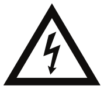
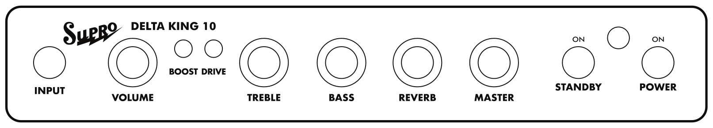
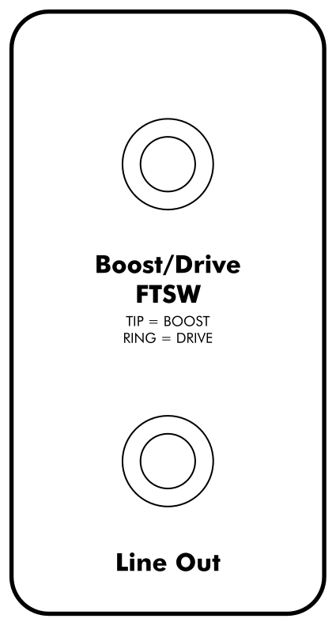
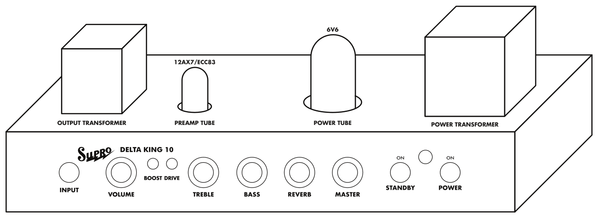

DELTA KING 10
User Manual
1. IMPORTANT SAFETY INFORMATION
| The triangle surrounding an exclamation mark alerts users to the presence of important warnings or information. | |
 |
The triangle surrounding a lightning bolt alerts users to the presence of dangerous high-voltage within the enclosure of the products that can pose a significant risk of electrical shock. |
- Read these instructions.
- Keep these instructions.
- Heed all warnings.
- Follow all instructions.
- Do not use this apparatus near water.
- Clean only with dry cloth.
- Do not block any ventilation openings. Install in accordance with the manufacturer’s instructions.
- Do not install near any heat sources such as radiators, heat registers, stoves, or other apparatus (including amplifiers) that produce heat.
- Do not defeat the safety purpose of the grounding-type plug. A grounding-type plug has two blades and a third grounding prong. The third prong is provided for your safety. If the provided plug does not fit into your outlet, consult an electrician for replacement of the obsolete outlet.
- Protect the power cord from being walked on or pinched particularly at plugs, convenience receptacles, and the point where they exit from the apparatus.
- Only use the attachments/accessories specified by the manufacturer.
- Use only the cart, stand, tripod, bracket, or table specified by the manufacturer, or sold with the apparatus. When a cart is used, use caution when moving the cart/apparatus combination to avoid injury from tip-over.
- Unplug this apparatus during lightning storms or when unused for long periods of time.
- Refer all servicing to qualified service personnel. Servicing is required when the apparatus has been damaged in any way, such as power-supply cord or plug is damaged, liquid has been spilled or objects have fallen into the apparatus, the apparatus has been exposed to rain or moisture, does not operate normally, or has been dropped.
- To ensure proper ventilation always make sure there is at minimum four inches (101.6mm) of space behind the rear of the apparatus. The ventilation should not be impeded by covering the ventilation opening with items, such as newspapers, tablecloths, curtains, etc. Do not impede ventilation by placing objects on top of the apparatus which extend past the rear edge of its cabinet.
- Please contact Supro directly or a qualified person for tube replacement.
- The AC plug is the mains disconnect. The plug should remain accessible after installation.
- WARNING To reduce the risk of fire or electric shock, do not expose this apparatus to rain or moisture.
- WARNING The apparatus shall not be exposed to dripping or splashing and objects filled with liquid, such as vases, shall not be placed on apparatus.
- CAUTION To reduce the risk of fire or electric shock, do not remove the cover or back of the product. There are no user serviceable parts inside. Refer service to qualified personnel.
2. ANATOMY AND USAGE
2.1 FRONT PANEL

INPUT
Instrument input.
VOLUME
Controls the gain of the preamp. Higher settings cause break-up in the preamp section.
BOOST
Turn this switch up to activate the Boost. This function is foot-switchable.
DRIVE
Turn this switch up to activate Overdrive mode. This function is foot-switchable.
TREBLE
Controls the amount of treble in your tone.
BASS
Controls the amount of bass in your tone.
REVERB
Controls the amount of reverb added to your signal.
MASTER
Controls the volume and break-up of the power section of the amplifier.
STANDBY SWITCH
This turns on the high voltage to the tubes. The tubes should warm up for at least one minute before turning Standby switch to ON. Be sure that the Volume control is set to a reasonable position before switching the amplifier ON as this amplifier can be very loud! For short breaks (5 minutes or less), using the Standby switch will increase tube life.
PILOT LIGHT
This shows that AC Mains voltage is flowing to the amplifier.
POWER SWITCH
Turns on AC power to the amplifier. The Power switch should be turned on, and the pilot light should be lit for 1 minute before turning the Standby switch to ON.
2.2 REAR PANEL
BOOST/DRIVE FTSW
Using a TRS cable, connect a two-button, latching footswitch to this jack to facilitate remote switching of the Boost and Drive functions.
LINE OUT
The Line Out provides a buffered preamp output to another amplifier or to a console for recording.

2.3 TUBES
Each Supro tube amplifier is 100% analog.

2.4 TROUBLESHOOTING
Supro products have been designed for years of trouble-free service. There are many unique protection features to the design. If you are having difficulties, check the following:
No sound, but pilot light is ON
Check to see that the speaker is plugged into the speaker jack (not the footswitch jack). Make sure all knobs are turned up past zero and that the Standby switch is set to operate. As this is a tube amplifier, the tubes take approximately 1 minute to warm up before you will get sound. The Standby switch should be set to standby for this warm up period.
No sound and the lights are all OFF
Unplug the power cord and check the 3A, 250V (100V–120V); 2A, 250V (220V–240V) fuse.
If you have any further questions, our email address is support@suprousa.com.
3. SUPRO LIMITED WARRANTY
Your new Supro product is warranted to be free from defects in materials and workmanship for 1 year from the original date of purchase. If the product is registered at http://suprousa.com/warranty, coverage is extended to two years. Tubes and speakers are covered for 90 days. Warranty applies only to the original retail purchaser of a registered Supro product, subject to the limitations contained in this warranty.
THIS WARRANTY IS EXTENDED TO THE ORIGINAL RETAIL PURCHASER OF SUPRO PRODUCTS BOUGHT ON OR AFTER JANUARY 1, 2020 ONLY AND MAY NOT BE TRANSFERRED OR ASSIGNED TO SUBSEQUENT OWNERS. IN ORDER TO VALIDATE YOUR WARRANTY, AND AS A CONDITION PRECEDENT TO WARRANTY COVERAGE HEREUNDER, YOU MUST REGISTER YOUR PRODUCT WITHIN SIXTY (60) DAYS FOLLOWING THE ORIGINAL DATE OF PURCHASE. YOUR PROOF OF PURCHASE OR SALES RECEIPT MUST ACCOMPANY ALL REQUESTS FOR WARRANTY COVERAGE—YOU MAY SUBMIT YOUR RECEIPT ON THE REGISTRATION FORM. IF YOU DO NOT REGISTER THE PRODUCT WITHIN 60 DAYS OF PURCHASE, YOUR PRODUCT WILL NOT BE SERVICED UNDER WARRANTY.
If your Supro product is destroyed, lost or damaged beyond repair while in the possession of Supro for repair, Supro will replace that product with one of the same or most similar style of a value not in excess of the original purchase price of your product. Any insurance covering the product, including but not limited to collector’s value insurance, must be carried by you at your expense.
This warranty covers the cost of both labor and materials on repairs deemed necessary by our Customer Service Representative which includes:
- Amplifiers: 1 year (Extended to 2 if registered)
- Speaker Cabinets: 1 year (Extended to 2 if registered)
- Tubes and speakers: 90 days
- Effects Pedals: 1 year (Extended to 2 if registered)
THIS WARRANTY DOES NOT COVER:
- Any product that has been altered or modified in any way or upon which the serial number has been tampered with or altered.
- Any product whose warranty has been altered or upon which false information has been given.
- Any product that has been damaged due to misuse, negligence, accident, or improper operation.
- The subjective issue of tonal characteristics.
- Shipping damages of any kind.
- Any product that has been subjected to extremes of humidity or temperature.
- Normal wear and tear.
- Any product that has been purchased from an unauthorized dealer, or upon which unauthorized repair or service has been performed.
SUPRO MAKES NO OTHER EXPRESS WARRANTY OF ANY KIND WHATSOEVER. ALL IMPLIED WARRANTIES, INCLUDING WARRANTIES OF MERCHANTABILITY AND FITNESS FOR A PARTICULAR PURPOSE, EXCEEDING THE SPECIFIC PROVISIONS OF THIS WARRANTY ARE HEREBY DISCLAIMED AND EXCLUDED FROM THIS WARRANTY. SOME STATES AND/OR COUNTRIES DO NOT ALLOW THE EXCLUSION OR LIMITATION OF IMPLIED WARRANTIES SO THAT THE ABOVE MAY NOT APPLY TO YOU. SUPRO SHALL NOT BE LIABLE FOR ANY SPECIAL, INDIRECT, CONSEQUENTIAL, INCIDENTAL OR OTHER SIMILAR DAMAGES SUFFERED BY THE PURCHASER OR ANY THIRD PARTY, INCLUDING, WITHOUT LIMITATION, DAMAGES FOR LOSS OF PROFITS OR BUSINESS OR DAMAGES RESULTING FROM USE OR PERFORMANCE OF THE PRODUCT, WHETHER IN CONTRACT OR IN TORT, EVEN IF SUPRO OR ITS AUTHORIZED REPRESENTATIVE HAS BEEN ADVISED OF THE POSSIBILITY OF SUCH DAMAGES, AND SUPRO SHALL NOT BE LIABLE FOR ANY EXPENSES, CLAIMS, OR SUITS ARISING OUT OF OR RELATING TO ANY OF THE FOREGOING.
Steps To File for Warranty Coverage:
- Register your new product at http://suprousa.com/warranty
- Complete the warranty request form available at http://suprousa.com/support and we will handle it from there!
Manufacturer:
DAG Audio LLC, 141 West 28th St. 4th Floor,
New York, NY 10001
Commercial Importer, EU:
BOND AUDIO GmbH & Co. KG., Lichtstrasse 25,
50825 Cologne, Germany